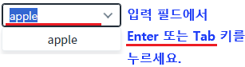
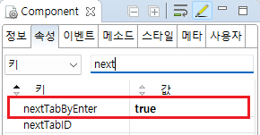
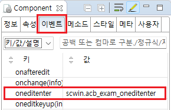

AutoComplete의 'oneditenter' 이벤트의 핸들러를 등록하고, 핸들러에서 입력된 키의 정보를 확인하는 예제입니다.이 이벤트는 검색어 입력 필드에서 Enter 또는 Tab 키가 입력되면 발생합니다.
'oneditenter' 이벤트가 발생하면 입력된 키의 정보 출력하기
컴포넌트의 검색어 입력 필드에서 Enter 또는 Tab 키를 누르면 'oneditenter' 이벤트가 발생합니다.
Image 1.브라우저(Chrome) 실행 예시 - 키 입력

컴포넌트에서 포커스가 빠져나가고 로그 확인 영역에 이벤트 정보가 출력됩니다. (브라우저의 개발자 도구의 콘솔(console)탭을 통해 자세한 이벤트 정보를 확인 할 수 있습니다)
Example 1.Log
[15:23:06] scwin.acb_exam_oneditenter [15:23:06] e.keyCode : 13 e.which : 13 e.code : Enter e.key : Enter
속성 'nextTabByEnter'를 'true'로 정의합니다. 이 속성을 적용하지 않은 경우 기본 값은 'false'입니다. (속성 nextTabID가 지정되어 있는 경우, Enter 키 입력 시 nextTabID 컴포넌트로 포커스를 이동 시킬지에 대한 여부를 정의합니다.)
Image 2.웹스퀘어 스튜디오의 Component View - 속성 예시

Example 2.Source
<!-- autoComplete의 소스 본문 예시 --> <w2:autoComplete nextTabByEnter="true"> <!-- 중략 --> </w2:autoComplete>
예제 파일에서는 핸들러로 사용할 메소드명을 'scwin.acb_exam_oneditenter'로 정의하였습니다.
Image 3.웹스퀘어 스튜디오의 Component View - 이벤트 예시

스크립트 탭에서 핸들러(scwin.acb_exam_oneditenter)를 정의합니다.
Example 3.Script
//컴포넌트 acb_exam의 oneditenter 이벤트의 핸들러 scwin.acb_exam_oneditenter = function(e) { var tmpKeyCode = e.keyCode; // 13:Enter ,9:Tab var tmpWhich = e.which; // 13:Enter ,9:Tab var tmpCode = e.code; var tmpKey = e.key; //로직 작성 };
oneditenter
nextTabByEnter